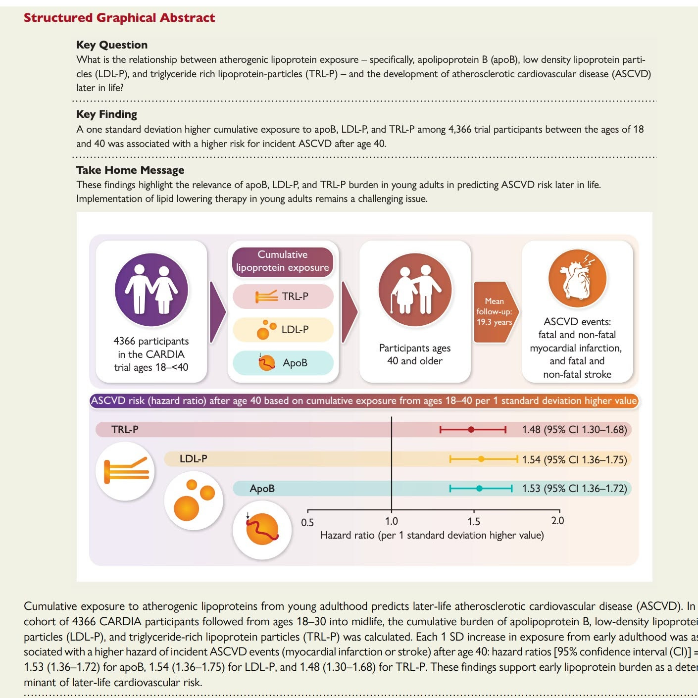
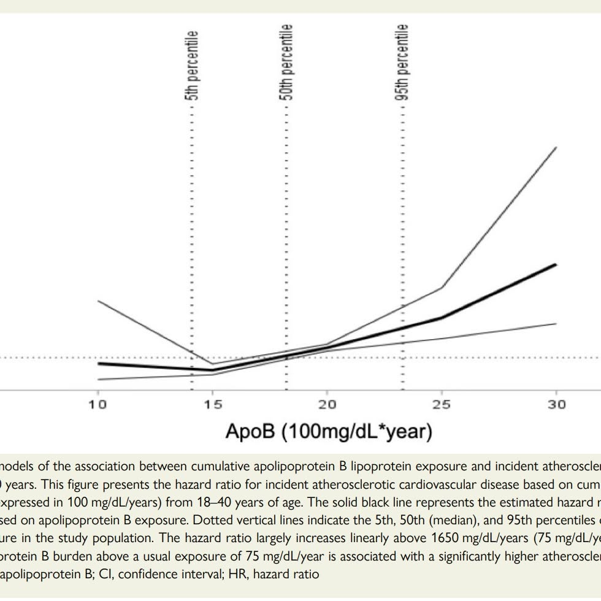
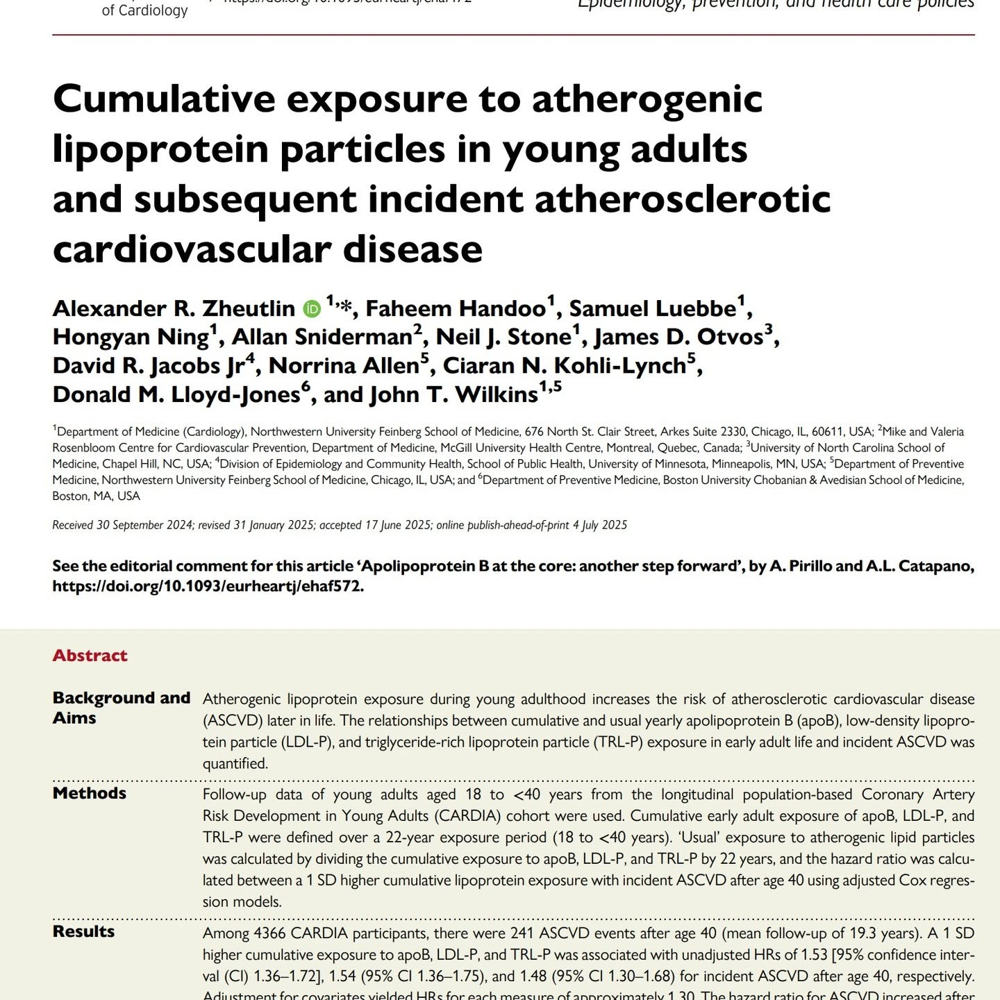

Younger people with a high number of atherogenic lipoprotein particles between ages 18-40, as measured by Apo-B or LDL-P, end up being at 30% higher risk of heart attack or stroke after age 40.
#apobHD #ldlpHD
❤️ Prevenire è meglio che curare: mantenere basse le lipoproteine “cattive” protegge il cuore per tutta la vita
Un nuovo studio del progetto CARDIA mostra che la quantità di lipoproteine aterogene (come apoB, LDL-P e TRL-P) presente tra i 18 e i 40 anni ha un forte impatto sul rischio di malattie cardiovascolari dopo i 40.
Cosa ha scoperto lo studio:
Le persone con livelli più alti di queste particelle in giovane età avevano un rischio maggiore del 30% di infarto o ictus dopo i 40 anni.
Il rischio iniziava ad aumentare quando:
apoB superava 75 mg/dL/anno
LDL-P superava 1000 nmol/L/anno
TRL-P superava 135 nmol/L/anno
Più particelle circolano nel sangue, maggiore è il rischio — e non esiste un limite “sicuro”.
Cosa significa “-P”?
“-P” sta per numero di particelle: misura quante particelle di LDL o di lipoproteine ricche di trigliceridi ci sono nel sangue, non solo quanta colesterolo contengono.
Ogni particella può entrare nelle pareti delle arterie e favorire la formazione di placche, quindi più particelle = più rischio.
Come si misura?
✅ Chiedi al tuo medico un test per apoB (semplice e disponibile in molti laboratori).
✅ Oppure, se possibile, un profilo NMR delle lipoproteine, che riporta LDL-P e TRL-P.
✅ Il digiuno di solito non è necessario per l’apoB.
Perché è importante:
Molte persone controllano solo il colesterolo, ma apoB e il numero di particelle offrono un quadro più completo del rischio cardiovascolare — soprattutto nei giovani, anche con valori normali di colesterolo ma trigliceridi elevati.
Messaggio chiave:
🩺 Controllati presto.
📉 Mantieni apoB e le particelle basse.
💪 Meno è meglio — prima inizi, meglio è, più a lungo vivi in salute.



